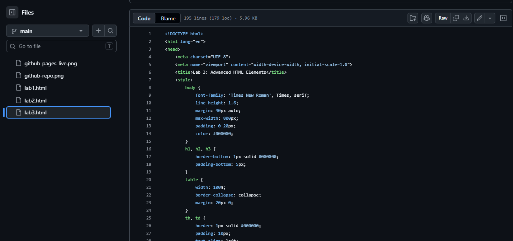

3. Local and External Media Assets
Local Repository Image

Source Path: images/local-screenshot.png
External Asset Image URL
Source Path: https://picsum.photos/300/200
Submitted by: Shahmeer
| Language | Primary Function | File Extension | Execution Environment |
|---|---|---|---|
| HTML | Defines document markup structure | .html | Client-Side Web Browser |
| CSS | Manages style rules and presentation visual layouts | .css | Client-Side Web Browser |
| JavaScript | Handles interactive logic and dynamic behavior scripting | .js | Browser V8 Engine / Node.js Runtime |

Source Path: images/local-screenshot.png
Source Path: https://picsum.photos/300/200